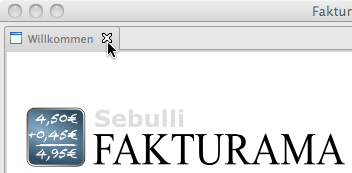

Starten Sie Fakturama
Sie werden zuerst aufgefordert, das Arbeitsverzeichnis auszuwählen. Falls noch keines angelegt wurde, kann dies auch im Dateidialog geschehen.
Fakturama begrüßt Sie mit einem Intro. Schließen Sie dies über das X rechts neben dem Text "Willkommen"
Nach der Installation ist ein Demowebshop auf http://www.fakturama.org ausgewählt. Startet man ein Importieren von Webshopdaten so werden 3 Musterprodukte und 2 Musterkunden angelegt. Diese können später wieder gelöscht werden.
Vor dem Arbeiten mit Fakturama sollten noch einige Einstellungen gesetzt werden. Die Werte sind bereits sinnvoll ausgewählt, doch nicht immer passen diese auf den eigenen Arbeitsablauf.
Einige Einstellungen wie Firmendaten oder die Zugangsdaten des Webshops müssen gesetzt werden. Es empfiehlt sich, alle Einstellungen zu prüfen.
Fakturama benutzt zum Drucken von Dokumenten wie Rechnungen oder Lieferscheine OpenOffice / LibreOffice Vorlagen. Diese müssen auf das eigene Design angepasst und mit den Firmendaten versehen werden.
Siehe auch Einstellungen
Siehe auch OpenOffice.org / LibreOffice Vorlagen